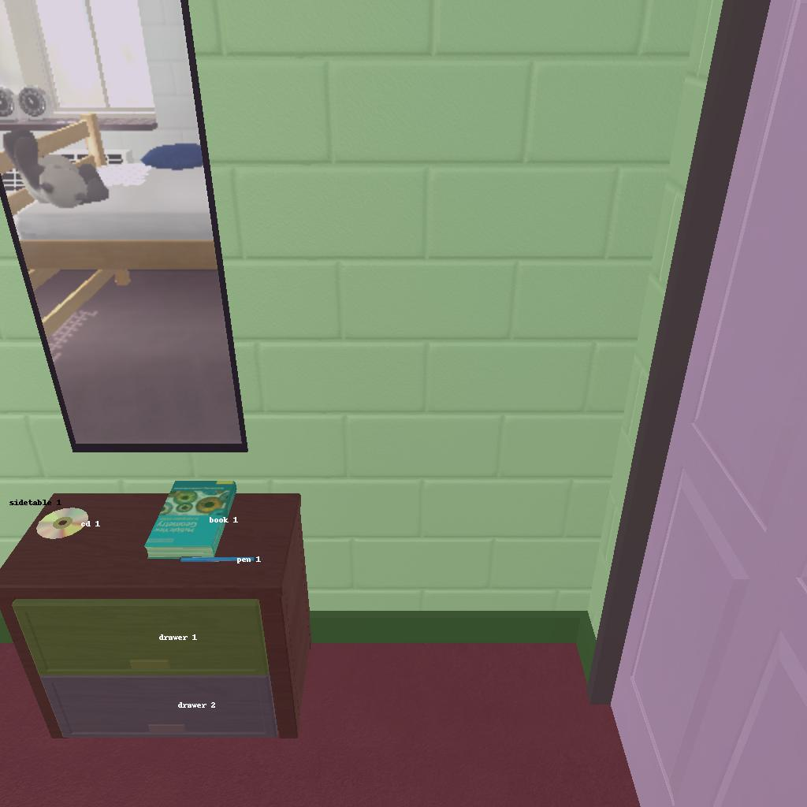

---------------------------------------------------------task: 8---------------------------------------------------------
--------------------------------------------------------------------------------------------------------------------------------------------------------------------
--------------------------------------------------------------------------------------------------------------------------------------------------------------------
Step:--------------------------------------------------------------------------10-------------------------------------------------------------------------------
----------------------------------------
VLM Prompt:
Image1:
Image2:
Image3:
**Instruction**
1. Analyze the provided image to identify all visible household objects, focusing on those relevant to the task description "put some laptop on desk."
2. Use the analysis of the image and the task hint "The agent must find an object of the desired type, pick it up, find the correct location to place it, and put it down there." to answer the question: what is the most reasonable action in the choices for the task description "put some laptop on desk"?
4. Decide and write the answer using the template: The answer is: (i): , where i is the real number. If there is no desired object in the image, search every place based on **Initial Observation** to find the object. And if no one is exactly correct, choose a similar answer.
**Initial Observation**
You are in the middle of a room. Looking quickly around you, you can see bed (1), garbagecan (1), desk (1), sidetable (1), drawer (1-5), laundryhamper (1)
**Answer Choices**
(1): go to bed 1
(2): go to garbagecan 1
(3): go to desk 1
(4): go to sidetable 1
(5): go to drawer 2
(6): go to laundryhamper 1
(7): go to drawer 4
(8): go to drawer 5
(9): open drawer 3
(10): close drawer 3
(11): take alarmclock 1 from drawer 3
(12): take laundryhamperlid 1 from drawer 3
(13): take alarmclock 2 from drawer 3
(14): take cellphone 1 from drawer 3
(15): take keychain 2 from drawer 3
(16): take creditcard 1 from drawer 3
(17): take pen 3 from drawer 3
(18): take pen 2 from drawer 3
(19): take pencil 1 from drawer 3
(20): take pencil 2 from drawer 3
(21): take keychain 1 from drawer 3
(22): use desklamp 1
(23): examine drawer 3
**Answer**
Let's think step by step by following the instructions.
----------------------------------------
----------------------------------------
Original Response:
The task is to "put some laptop on desk." From the initial observation, we know there is a desk (desk 1) in the room, which is also visible in Image 3. Since the task is to put a laptop on the desk, we should first go to the desk to see if there is already a laptop there or if there is space to put one.
Analyzing Image 3, there is no laptop visible on the desk. The desk has various items like an alarm clock, a lamp, pens, a credit card, and a cellphone, but no laptop.
Therefore, the most reasonable action to start with would be to go to the desk to check for space or a laptop that might be hidden under other items.
The answer is: (3): go to desk 1.
----------------------------------------
----------------------------------------
>>> Refine Original VLM Response and Get Pure Action: go to desk 1
----------------------------------------
-----------------------------------------------------------------
Running time: 12.893065929412842 seconds
Total Money: 4.656219999999999
-----------------------------------------------------------------
-----------------------------------------------------------------
Text Observation:You arrive at loc 2. On the desk 1, you see a alarmclock 1, a pencil 1, and a pen 2.
-----------------------------------------------------------------
UNSUCCEED